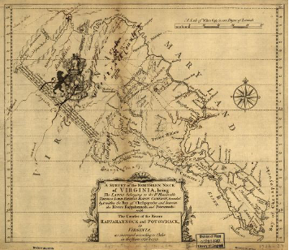
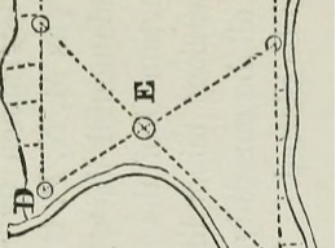

Services
Topographical Surveys
Topographical surveys locate all surface features of a property, and depicts all natural features and elevations.
Construction Staking
Construction staking surveys are the process of analyzing and interpreting architectural and civil engineering plans and calculating appropriate offset survey points and elevations
Boundary Line Surveys
Property and boundary line surveys are processes carried out to determine property lines and define true property corners of a parcel of land described in a deed.
Land Title Surveys
Land title surveys are a thorough survey of real property performed by licensed professional land surveyors.

Byrd Land Surveying 801-555-4321